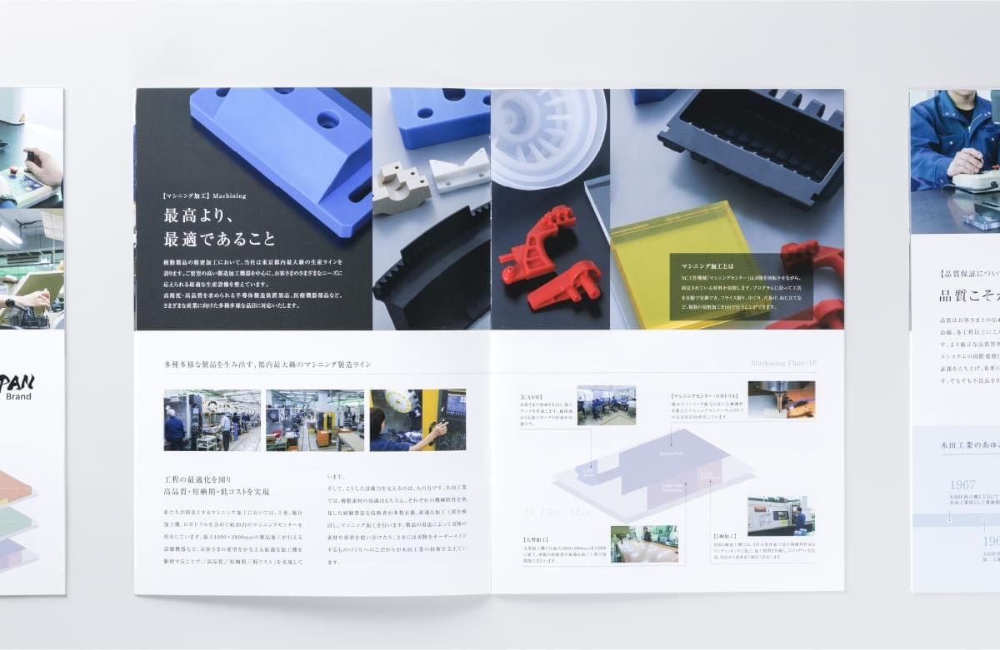
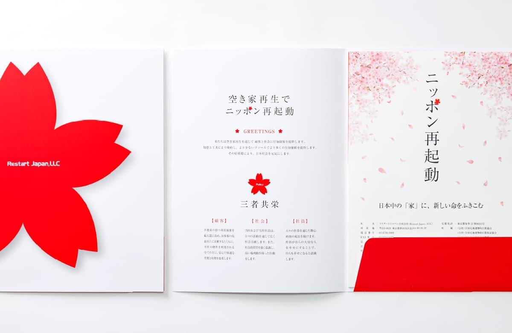
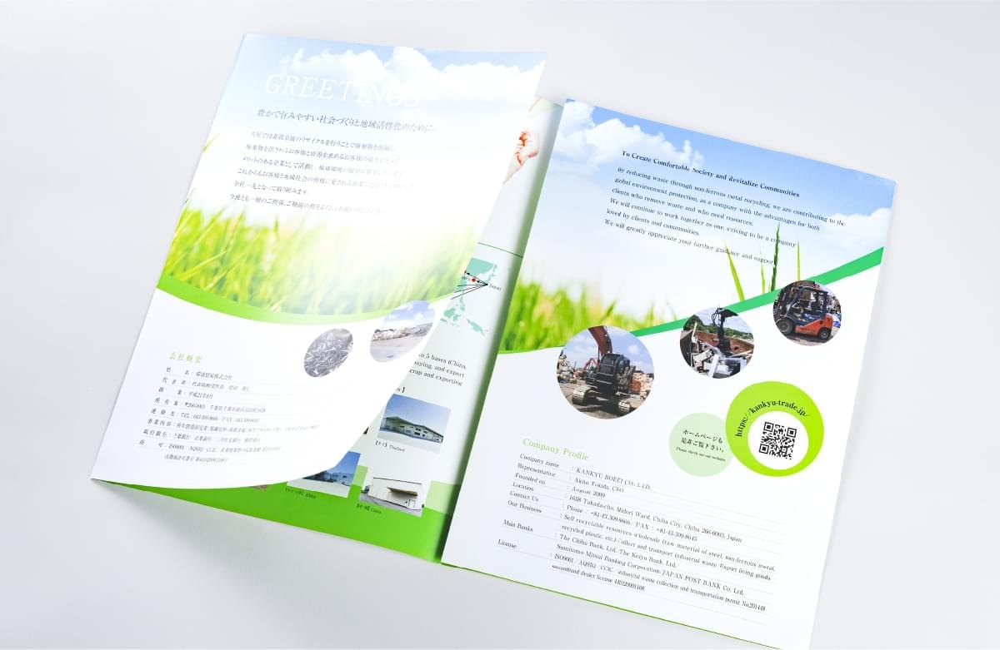
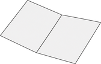
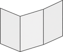
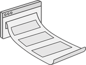
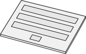
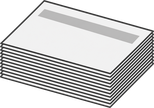
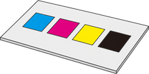
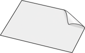

1
御社の中にある答えを
一緒に探します
会社案内に何を載せるべきかは、業種と渡す相手によって変わります。まず御社の理念・現場・強みをお聞きし、そこから構成をご提案します。
![ADS株式会社 Advertising Design Studio]()
会社案内・パンフレットのデザイン制作

何を載せるかが決まっていない状態からでも構いません。
企画・取材・撮影・コピー・デザイン・印刷まで一貫対応。
デザインは3案以上、修正回数は無制限。
納得いただけるまでお付き合いします。


会社案内の制作は数年に一度、あるいは初めての仕事です。
このような課題はありませんか。
決まっているのは、作らなければならないという事実だけ。
その状態からご相談いただいて構いません。最後の一つについては、私たちの仕事そのものです。
会社の強みや理念は、そのまま並べても伝わりません。
（工業・製造／会社案内16P中とじ）
特色（何を）
都内
デザイン判断（どのように）
その想いから

（不動産・空き家再生／A4・4P＋ポケットフォルダ）
特色（何を）
ニッポン再起動を
デザイン判断（どのように）
古来より

（リサイクル／会社案内8P両観音折）
特色（何を）
未来の
デザイン判断（どのように）
訴求点を

同じ業種でも企業様ごとに特色は異なり、その解釈が合っているかどうかは、デザインに起こしてみないと分かりません。
1
会社案内に何を載せるべきかは、業種と渡す相手によって変わります。まず御社の理念・現場・強みをお聞きし、そこから構成をご提案します。
2
ページ数ごとの定価を公開しています。デザイン会社、ライター、カメラマン、印刷会社をそれぞれ手配する必要はなく、印刷費まで含めた総額を着手前にご提示するため、社内でのご説明にも困りません。
3
デザインは3案以上をご提示し、修正回数に制限は設けていません。正確で適切な掲載情報になるまで徹底的に対応します。初めてのご依頼で、途中で方向性が変わっても問題ありません。
官公庁から大手企業まで。


業種一覧
エンターテインメント、
進め方
お願いすること：現状の課題と、渡す相手をお聞かせください

お願いすること：構成案のご確認のみ。掲載内容はこちらからご提案します
複数の方向性から作成し、3案以上をご提示します。
修正回数に制限はありません。正確で適切な掲載内容になるまで、何度でも作り直します。
お願いすること：方向性のお選びとご意見

お願いすること：取材へのご対応。原稿の執筆は不要です

お願いすること：最終ご確認
御社の特色を正しく読み取れているかは、形にしてご覧いただかないと分からないため、
修正回数を無制限にしています。
原稿もお写真もお持ちでない状態から始まる案件がほとんどです。
取材とカメラマンの手配も含めてご対応します。
ページ数ごとの明朗料金。印刷費まで含めた総額でご提示します
お問い合わせをいただく前に、おおよその費用がお分かりいただけます。
社内で予算をご申請いただく際の資料としても、そのままお使いください。
パンフレットのデザイン・印刷費
| サイズ／ページ数 | 仕様／部数／色数 | 料金 |
|---|---|---|
 A4／4ページ |
二つ折り／500部／4c | ￥180,000 |
 A4／6ページ |
三つ折り／500部／4c | ￥220,000 |
| A4／8ページ | 中綴じ／500部／4c | ￥280,000 |
| A4／12ページ | 中綴じ／500部／4c | ￥360,000 |
| A4／16ページ | 中綴じ／500部／4c | ￥430,000 |
| A4／20ページ | 中綴じ／500部／4c | ￥510,000 |
| A4／24ページ | 中綴じ／500部／4c | ￥590,000 |
ホームページのデザイン（原稿ご支給時）・コーディング費
| ページ数 | 仕様 | 料金 |
|---|---|---|
| 5ページコーポレートサイト／採用サイト／販売サイト 等 | PC／SP | ￥300,000〜 |
| 10ページ | PC／SP | ￥400,000〜 |
| 15ページ | PC／SP | ￥600,000〜 |
 LP（ランディングページ） |
PC／SP | ￥200,000〜 |
| CMS導入 | ￥100,000〜 | |
 フォーム設置 |
￥30,000〜 |
制作オプション
| 項目 | 内容 | 料金／数量 |
|---|---|---|
| 企画・構成費 | コンテンツ・構成・仕様案等の制作 | ￥30,000〜／一式 |
| コピーライティング費 | キャッチコピー、リード、図版案などの原稿作成費 | ￥8,000〜／1P |
| カメラマン撮影費 | 商品撮影・人物・社内風景・設備・作業風景など | ￥3,000〜／1カット（物撮）￥35,000／2H（ロケ）￥80,000／6H（ロケ） |
| イラスト制作費 | 各種イラスト・アイコン・キャラクター作成 | ￥3,000〜／1カット￥50,000〜／1式 |
| 校正・校閲料金 | 誤字脱字、表現、表記統一、整合性確認など | ￥2,000〜／1頁 |
| 翻訳 | 日本語から英語に | ￥20,000〜／500文字 |
印刷オプション
| 項目 | 内容 | 料金／数量 |
|---|---|---|
 印刷部数追加 |
A4／4P | ￥30,000〜／500部 |
 色校正（簡易・本機） |
A4／4P | ￥5,000〜／1部 |
 印刷特殊加工 |
PP貼り／カットアウト／箔押し／浮き出し／UV／ホログラム加工 他 | ￥30,000〜／100部〜 |
追加費用が後から発生しないよう、着手前に総額をご提示します。修正回数は無制限ですが、それによる追加費用はいただきません。
表示価格は税抜価格です。
印刷通販や
会社案内を作る手段は
| 大手制作会社 | 印刷通販 | クラウドソーシング | ||
|---|---|---|---|---|
| 構成から相談できる | ○ | ○ | × | △ |
| 特色の読み解きと提案 | ○ | ○ | × | △ |
| 取材・撮影 | ○ | ○ | × | △ |
| 印刷まで一貫 | ○ | ○ | ○ | × |
| 修正回数 | 無制限 | 契約による | 不可 | 回数制限あり |
| 法人としての責任 | ○ | ○ | ○ | △ |
| 費用 | 中 | 高 | 低 | 低 |
すでに構成も原稿もお決まりで、
何を載せるかから
はい、その状態でのご相談が多くいただく形です。ページ数ごとの参考価格を公開しておりますので、まずは規模感をご確認ください。伝えたい内容と渡す相手をお聞きしたうえで、印刷費を含めた総額をお出しします。
はい、その状態から始まる案件がほとんどです。原稿はこちらで執筆し、撮影はカメラマンの手配から対応します。お願いするのは、取材へのご対応とご確認だけです。
修正による追加費用はいただきません。無制限としているのは、御社の特色を正しく読み取れているかは、形にしてご覧いただかないと分からないためです。
対応します。作りながら伝えたいことが固まっていくケースは珍しくありません。変わった時点でお知らせいただければ、そこから組み直します。
A4二つ折り4ページで約1か月、中綴じ16ページで約2か月が目安です。展示会や採用イベントなど動かせない期限がある場合は、そこから逆算して組みますのでお申し付けください。
全国からご依頼いただけます。関東近県は直接お伺いし、それ以外はオンラインで進めます。取材や撮影が必要な場合は出張して対応します。
はい、ご希望に応じて納品します。増刷をご自身で手配いただくことも可能です。形式については、その後の運用方法をお聞きしたうえでご相談させてください。
ADSの基本情報と、制作を支える体制をご紹介します。
ページ数、
まずは御社の現状と、
ご相談・お見積もりは
1営業日以内に